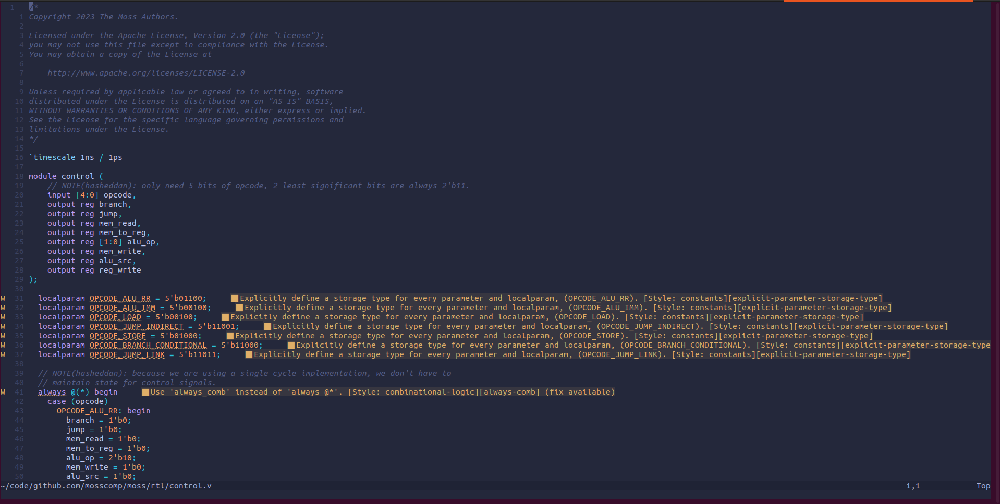
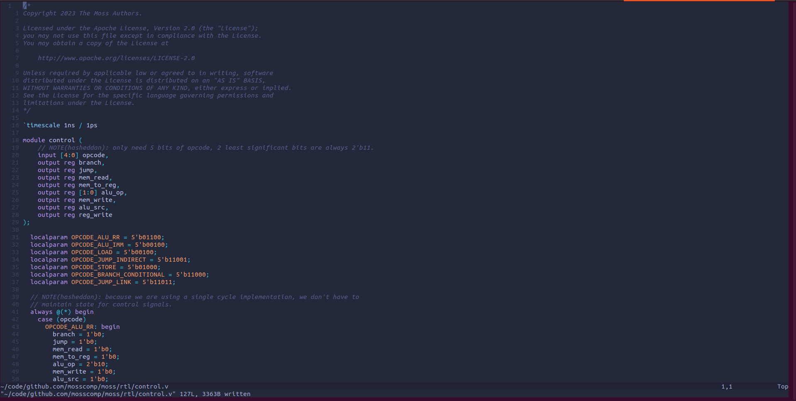

I have been using
Vivado for
moss RTL development, which, despite its
notoriously large install size, offers a fairly decent developer experience.
Or maybe I have just been using it for too long. I’m not sure I would have said this a few months ago.
However, I still prefer to write Verilog in Neovim, as it
allows me to use vim motions, as well as switch between RTL and software code
without changing my workflow. For most languages, I leverage Neovim’s Language
Server Protocol (LSP) support for linting,
formatting, auto-completion, and compiler diagnostics. I had been missing the
same level of support for Verilog, but
noticed that nvim-lspconfig listed
a few different options. One of the most mature options is
Verible, which is developed under
the CHIPS Alliance.
Setup is pretty straightforward and mirrors other language server
configurations. I still use an init.vim configuration script rather than
init.lua, but the setup looks largely the same.
init.vim (snippet)
lua <<EOF
require('lspconfig').verible.setup{
cmd = {'verible-verilog-ls', '--rules_config_search'},
}
EOF
autocmd BufWritePost *.v lua vim.lsp.buf.format({ async = false })
verible-verilog-ls
is the language server component of the Verible tool suite. You can find
additional configuraion options in the
Verible
and
nvim-lspconfig
documentation. The primary adjustments being made to the default setup are that
we are supplying a flag (--rules_config_search) and specifying that we want
formatting (vim.lsp.buf.format) to run automatically after saving Verilog
(*.v) files.
The next time I opened Neovim, I was able to auto-format all existing RTL files on save. I also was presented with inline hints, such as the ones shown below.

Neovim buffer with linter errors shown for
explicit-parameter-storage-typeandalways_combrules.
While this is helpful, Verible, as well as many of the other language server
options, is designed primarily for
SystemVerilog. Because
SystemVerilog is a superset of Verilog, many of the linter rules suggest changes
that are not valid in Verilog, such as the use of keywords like always_comb
(you can find a full list of linter rules
here).
Given the sample size of the existing moss RTL, I was able to put
together a Verible linting
configuration that eliminated these issues.
.rules.verible_lint
parameter-name-style=localparam_style:ALL_CAPS
-always-comb
-explicit-parameter-storage-type
-unpacked-dimensions-range-ordering
Because we supplied the --rules_config_search flag, verible-verilog-ls will
automatically search for a rules file with name .rules.verible_lint in parent
directories and apply it to the current file. This is especially useful in the
case of our Neovim setup where the path to the rules file may differ between
projects, so supplying a path via --rules_config <path> in our config would be
brittle. Reopening Neovim revealed that the rules file was in fact being
honored.
Note: you can test your linter rules config by invoking
verible-verilog-lint <path> --rules_config_searchdirectly.

The same Neovim buffer, now devoid of errors.
I am sure that my setup will continue to evolve over time, but my development
workflow has already been significantly improved, despite still having to open
Vivado to run simulation, synthesis, and implementation (place & route). Given
that interfacing with Vivado can be done using tcl
commands, I am planning to move towards
not using the UI at all and triggering all workflows from Neovim. Coming to
logic design from a software engineering background, I believe that I have a
unique opportunity to push forward improved developer experience in the space.
Documenting how to leverage some of the awesome existing open source tooling is
a small, but important first step, and I’ll make sure to continue to write posts
as my workflow evolves over time!
If you’re interested in keeping up with my three year chip design
journey,
subscribe to the RSS feed for this blog,
and tune in for my ~weekly
livestreams. As always, if you
have feedback, questions, or just want to chat, feel free to reach out to
@hasheddan on any of the platforms listed on the home
page.